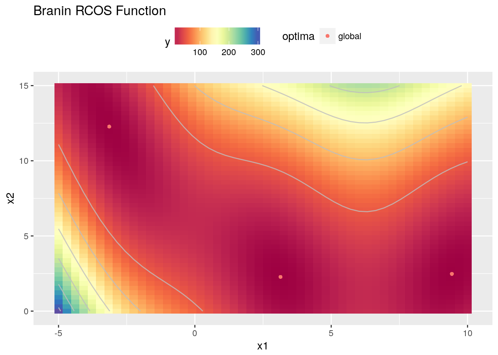

This Vignette is supposed to give you a more in-depth introduction to mlrMBO and the principles and different approaches of model-based optimization.
We use the Branin function for this example.
objfun1 = makeBraninFunction()
ggplot2::autoplot(objfun1, render.levels = TRUE, show.optimum = TRUE)
## Warning: Ignoring unknown aesthetics: fill
The second argument of the mbo() function - design - is the initial design with default setting NULL.
An easy (and recommended) way to create an initial design is to use the generateDesign() function from the ParamHelpers package. If no design is given (i.e. design = NULL) a Maximin Latin Hypercube lhs::maximinLHS() design is used with n = 4 * getNumberOfParameters(objfun1) points. Other possibilities to generate designs are for example generateGridDesign and generateRandomDesign.
Note: If special designs are desired (e.g., orthogonal designs), they can be given as a data.frame but you have to make sure that the output resembles the output of generateDesign().
For our objective function objfun1 we create a slightly larger number of initial points than the default suggests.
n = 5 * getNumberOfParameters(objfun1)
des = generateDesign(n = n, par.set = getParamSet(objfun1), fun = lhs::randomLHS)If the design does not include the results of the objective function mbo will automatically calculate them in advance. Sometimes it makes sense to precalculate the results because you might want to reuse the design. In our case it is quite easy:
des$y = apply(des, 1, objfun1)Note: mlrMBO uses y as a default name for the outcome of the objective function. This can be changed in the control object.
In our example we use Kiriging as a surrogate because it is the most common for numerical model-based optimization and has prooven to be quite effective. We use mlr to generate the Kriging regression learner from the package DiceKriging.
surr.km = makeLearner("regr.km", predict.type = "se", covtype = "matern3_2", control = list(trace = FALSE))In fact you can use any other regression learner from mlr as a surrogate. Depending on the infill criterion we will set later it is important that the learner can predict the uncertainty (defined by predict.type = "se") alongside the mean prediction. Another popular surrogate would be the random forest. It’s use is explained in the Vignette for mixed space optimization.
The MBOControl object controls the optimization process and is created with makeMBOControl(). All parameters are documented in ?makeMBOControl. Some that influence the way MBO works are e.g.: * n.objectives: The number of objectives. 1 implies normal single criteria optimization and is covered in this page. For values >1 see the Vignette for multi-objective optimization. * propose.points: The number of evaluated points in each iteration. The default is 1 and refers to the standard SMBO process. Higher values suggest that you want to do parallelization (see Vignette). * final.method: Defines how the final solution is proposed from the finished optimization process. The default is to return the best reached value of y and its corresponding x. However, this can give misleading results for noisy functions.
With setMBOControlInfill() you can change the default infill criterion settings in the MBOControl object. It is highly recommended to adjust the settings to suit your optimization problem and the surrogate model.
An important role plays the choice of how the next design points in the sequential loop are chosen. 5 different infill criteria can be set via the crit argument in setMBOControlInfill():
mean: mean response of the surrogate model.ei: expected improvement of the surrogate model, which is the recommended setting if you use a Kriging surrogate.aei: augmented expected improvement, which is especially useful for noisy functions.eqi: expected quantile improvement.cb: confidence bound, which is the additive combination of mean response and mean standard error estimation of the surrogate model (\(\hat{\mu} - \lambda \cdot \hat{s}\)).Here you can also further configure the infill criterion (e.g. crit.cb.lambds for the lambda parameter if crit == "cb").
Note: When using Kriging as a surrogate, numerical problems can occur if training points are too close to each other. To circumvent this problem you can set filter.proposed.points to TRUE. Then points closer then the value of filter.proposed.points.tol to an already evaluated point will be replaced with a random point.
The key idea behind model-based optimization is to substitute the expensive optimization on the black-box with optimization on the surrogate as this is deemed to be cheaper. To optimize the infill criterion on the surrogate we also need an optimizer. The optimum of the infill criterion function gives us the candidate to be evaluated on the expensive function. Which one to use can be defined with the opt argument. The possibilities are:
focussearch: A Latin Hypercube design of size opt.focussearch.points (default 10000) is sampled in the parameter space (by randomLHS) and the design point with the best prediction of the infill criterion is determined. Then, the parameter space is shrunk around this point. This step is repeated opt.focussearch.maxit (default 5) times and the best observed point is passed back.cmaes: The optimal point is found with a covariance matrix adapting evolutionary strategy from the cmaes package. If the strategy fails, a random point is generated and a warning is given. Further control arguments can be provided in opt.cmaes.control as a list.ea: Use an evolutionary multiobjective optimization algorithm from the package emoa to determine the best point. The population size mu can be set by opt.ea.mu (default value is 10). (mu+1) means that in each population only one child is generated using crossover and mutation operators. The parameters eta and p of the latter two operators can be adjusted via the attributes opt.ea.sbx.eta, opt.ea.sbx.p,opt.ea.pm.eta and opt.ea.pm.p. The default number of EA iterations is 500 and can be changed by opt.ea.maxit attribute.nsga2: Use the non-dominated sorting genetic algorithm from the package nsga2R to determine the best point. This algorithm should be used for multi objective optimization (see Vignette).As all four infill optimization strategies do not guarantee to find the global optimum, users can set the number of restarts by the opt.restarts argument (default value is 1). Of all restarts the best infill criterion value determines the candidate to be evaluated.
Note: Only the focussearch optimizer is suitable for for categorical parameters in the parameter set.
With setMBOControlTermination() you can set multiple stopping criteria and the first one that is met will terminate the optimization process, e.g:
iters: The maximum number of iterationstime.budget: A maximum running time in secondstarget.fun.value: A threshold for function evaluation (stop if a evaluation is better than a given value)max.evals: The maximum number of function evaluationsNote: You can also create your own stopping condition(s).
This extends a MBO control object with options for multipoint proposal. Multipoint proposal means, that multiple points are proposed and evaluated, which is especially useful for parallel batch evaluation. For a detailed introduction, check the Vignette on parallelization.
This adds multi-criteria optimization specific options to the control object. For details see the Vignette on multi-criteria optimization.
Although we presented various options we will mainly go with the defaults settings.
ctrl = makeMBOControl()
ctrl = setMBOControlInfill(
control = ctrl,
crit = makeMBOInfillCriterionEI()
)
ctrl = setMBOControlTermination(
control = ctrl,
iters = 10
)Now we will apply the mbo() function to optimize the objective function.
res = mbo(objfun1, design = des, learner = surr.km, control = ctrl, show.info = FALSE)
print(res)
## Recommended parameters:
## x=9.21,2.34
## Objective: y = 0.628
##
## Optimization path
## 10 + 10 entries in total, displaying last 10 (or less):
## x1 x2 y dob eol error.message exec.time
## 11 9.103357 1.178894e+00 1.9677581 1 NA <NA> 0
## 12 7.540709 5.999567e-05 14.7661437 2 NA <NA> 0
## 13 9.999656 3.039340e+00 1.9426948 3 NA <NA> 0
## 14 9.999796 1.937189e-03 10.9469730 4 NA <NA> 0
## 15 9.206508 2.344828e+00 0.6279951 5 NA <NA> 0
## 16 3.028105 3.291628e+00 1.3179833 6 NA <NA> 0
## 17 3.407661 1.750343e+00 0.8422412 7 NA <NA> 0
## 18 -4.999427 1.499945e+01 17.4981957 8 NA <NA> 0
## 19 -2.533238 1.499985e+01 19.2524001 9 NA <NA> 0
## 20 3.594135 2.766994e+00 2.0343241 10 NA <NA> 0
## ei error.model train.time prop.type propose.time se
## 11 -10.5773621 <NA> 0.021 infill_ei 0.519 37.257086
## 12 -6.2565311 <NA> 0.017 infill_ei 0.717 21.023677
## 13 -6.8664950 <NA> 0.023 infill_ei 0.542 15.927219
## 14 -3.1049455 <NA> 0.019 infill_ei 0.680 13.807289
## 15 -2.5880333 <NA> 0.029 infill_ei 0.682 3.489611
## 16 -1.3442651 <NA> 0.022 infill_ei 0.657 14.913229
## 17 -1.4339112 <NA> 0.023 infill_ei 0.704 5.884045
## 18 -1.0213269 <NA> 0.026 infill_ei 0.724 37.398039
## 19 -1.2965466 <NA> 0.026 infill_ei 0.593 19.446170
## 20 -0.9392582 <NA> 0.022 infill_ei 0.697 3.001655
## mean
## 11 22.18138079
## 12 6.64207088
## 13 0.96788339
## 14 7.69041430
## 15 -0.01994806
## 16 14.91983581
## 17 2.75974572
## 18 57.87690570
## 19 22.30097297
## 20 1.18566904The default output of mbo contains the best found parameter set and the optimzation path. The MBOResult object contains additional information, most importantly:
x: The best point of the parameter spacey: The associated best value of the objective functionopt.path: The optimization path. See ?ParamHelpers::OptPath for further information.models: Depending on store.model.at in the MBOControl object, this contains zero, one or multiple surrogate models (default is to save the model generated at the last iteration).?MBOSingleObjResult)We can also change some arguments of the MBOControl object and run mbo() again:
ctrl = setMBOControlInfill(ctrl, crit = makeMBOInfillCriterionCB())
ctrl = setMBOControlTermination(ctrl, iters = 5L)
mbo(objfun1, design = des, learner = surr.km, control = ctrl, show.info = FALSE)